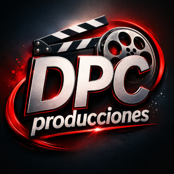

Contacto
Si tiene preguntas, sugerencias, problemas técnicos o propuestas de contratación relacionadas con nuestro contenido audiovisual o aplicaciones para Android, no dude en contactarnos. Intentaremos responderle lo antes posible.
✉ Email:
info_dpcproducciones@yahoo.com
Sobre nosotros

DPCproducciones desarrolla aplicaciones para Android, recursos técnicos audiovisuales, tutoriales y contenido educativo profesional enfocado en la educación, la cultura y el entretenimiento.

TécnicoAV es la división técnica audiovisual de DPCproducciones, centrada en sistemas audiovisuales profesionales, eventos en directo, ingeniería de sonido, iluminación, flujos de trabajo para retransmisiones, tecnología escénica, programación QLab, mantenimiento audiovisual y recursos de formación técnica.
👉 Visite nuestra web de noticias en Blogger.